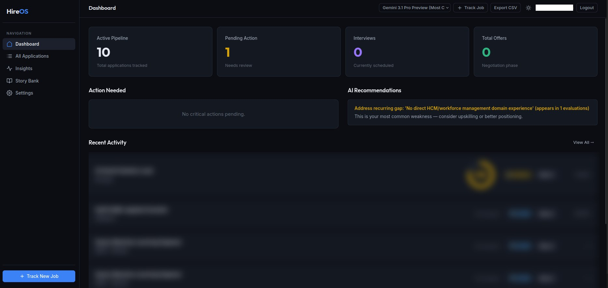

The actual problem
Applying to a serious role takes about ninety minutes of real work: read the JD properly, decide whether it's even worth it, rewrite the resume so the relevant experience is on top, get through the ATS keyword filter, prep the stories you'll be asked for, and then remember to follow up eleven days later. Do that forty times and the bottleneck isn't motivation — it's that you're a human running a batch job.
Every tool in this space solves the wrong half. Trackers give you a Kanban board and let you do all the thinking. Resume tools spit out one tailored PDF and have no idea what happened to it. Nothing owns the whole pipeline, which means nothing can learn from it.
So HireOS owns the whole pipeline: track → assess → tailor → apply → prep → follow up, with an agent doing the expensive cognitive step at each stage and a database remembering what happened.
The stack
| Layer | Tech | Why |
|---|---|---|
| Backend | FastAPI, SQLAlchemy, SQLite | Single-user-per-instance. Postgres would be ceremony. |
| Agents | Gemini 2.5, Claude, Groq, OpenAI | Routed per task — see below. |
| Memory | ChromaDB, embedded | Semantic search over every interaction. No vector-DB service to run. |
| Frontend | React + Vite | — |
| Documents | Playwright (Chromium) | HTML → PDF that survives an ATS parser. |
| Scraping | Playwright Stealth | Job boards actively fight you. |
It runs on Fly.io. SQLite on a mounted volume, one process, no Kubernetes. The whole thing costs less per month than a sandwich.
The part I'd actually defend in an interview: a three-pass resume pipeline
The naive version of AI resume tailoring is one prompt: "here's my resume, here's the JD, rewrite it." What comes back is fluent, confident, and quietly terrible. It invents a metric. It reformats your dates into something the ATS can't parse. It writes "spearheaded" four times. And because the model that wrote it is the model you'd ask to check it, it will happily tell you it's excellent.
HireOS runs three passes, and the third one is the one that matters.
Pass 1 — tailor
The LLM composes from a master resume broken into components — individual bullets, projects, skill blocks — rather than editing prose. It's selecting and rephrasing real things I did, not generating a resume from a JD. That constraint alone kills most hallucinated experience: the model can't reach for a bullet that doesn't exist in the component store.
Pass 2 — validate against design rules
There's a file, meta/resume_design.md, that encodes the formatting rules — margins, date formats, section order, bullet length, what an ATS chokes on. It's injected into every generation, and then a second pass re-reads the output against it and fixes violations. Treating layout constraints as a document the model must satisfy, rather than instructions buried in a prompt, made formatting drift mostly go away.
Pass 3 — the critic, and it must be a different model
A separate CriticAgent — default Claude, deliberately not whichever model did the writing — reviews the draft and returns a structured, brutal critique: fatal weaknesses, weak bullets with rewrites, ATS red flags, keyword gaps, and how you'd compare to a strong competing candidate.
Self-critique by the same model is theatre. It reliably rates its own output as strong, because the same weights that generated the text find that text plausible. Swap the critic to a different model family and the review gets sharp immediately — it has no stake in the draft and no shared blind spots.
This is the single highest-leverage design decision in the app, and it generalizes well beyond resumes. Any generate-then-evaluate loop where both roles run on one model is measuring the model's self-consistency, not the artifact's quality.
Multi-LLM routing is a cost decision, not a flex
An llm_router.py abstraction sits over Gemini, Claude, Groq and OpenAI, and the model is chosen per task rather than per app:
- Extraction — pull company, title, salary, stack out of a JD. Structured, verifiable, boring. Send it to the cheapest fast model.
- Critique and fit assessment — needs actual judgment. Pay for the strong model.
- Bulk narrative — insights and summaries. Groq, because latency is what you feel here.
Pinning one model for the entire app means either overpaying for JD parsing or under-thinking the critique. Neither is a good trade, and the abstraction to avoid both is about a hundred lines.
Memory: ChromaDB over every interaction
Each evaluation, critique and outreach draft gets embedded and stored. That turns the pipeline into something queryable — and the interesting output isn't retrieval, it's aggregation across the corpus. The dashboard screenshot above shows the real payoff:
"Address recurring gap: 'No direct HCM/workforce management domain experience' (appears in 1 evaluations) — this is your most common weakness."
No single evaluation could tell me that. It only exists because every evaluation is stored and compared. When a gap shows up in nine assessments instead of one, that's not feedback on an application — that's feedback on a career, and it's the one output of this app I genuinely could not have produced myself.
What's still ugly
- Scraping is a losing war. LinkedIn is login-walled and hostile; Playwright Stealth buys time, not victory. Pasting the JD text always works, so that's the escape hatch.
- Long-running agents don't fit request/response. Resume generation takes 30–60s. In the web UI you can poll. Over MCP, that assumption breaks badly — which is its own post.
- ATS scoring is an approximation. I score against a model of what parsers do. Nobody outside Workday knows what Workday actually does.
Why it's worth reading as a portfolio piece
My day job is production GenAI in insurance, where hallucinated citations have legal consequences, and almost none of it can be shown. HireOS is the same discipline on a problem I'm allowed to publish: structured generation against real constraints, adversarial validation, per-task model routing, and a bias toward deterministic checks around a non-deterministic core.
It's also, unglamorously, the tool I use to run my own job search. It has an MCP server so I can drive it from Claude instead of clicking. That felt like a stunt until it became the way I actually use it.